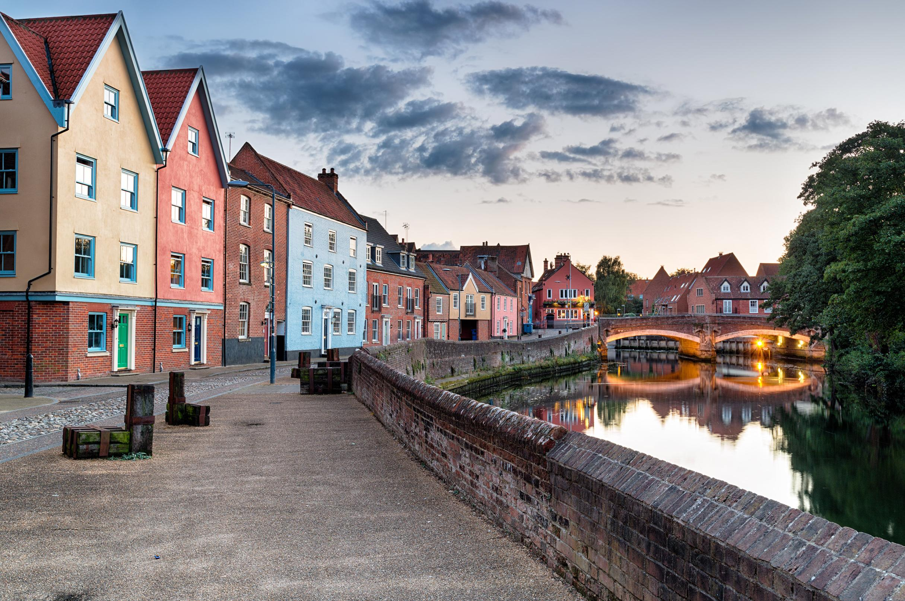

As one of the oldest cities in America, Norfolk's history is tied to some of the very first English settlers to come to this country. In addition to this, it is also home of the world's largest naval base and is currently serves and the North American Headquarters for Nato (Facts about Norfolk). But don't let its military importance fool you; there is still plenty of attractions to enjoy in this beautiful city.